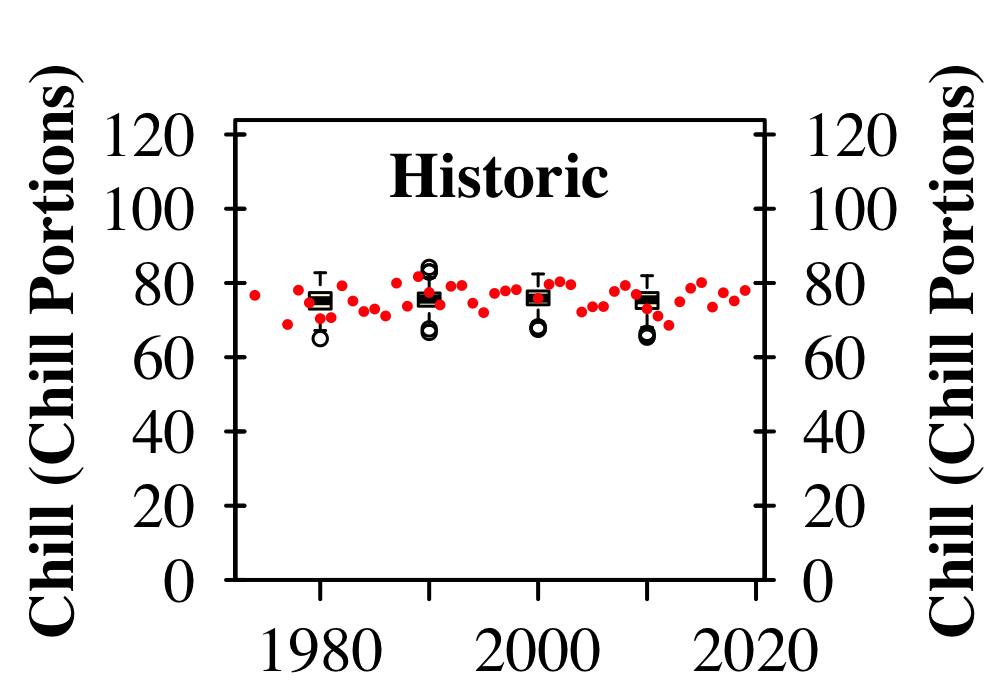
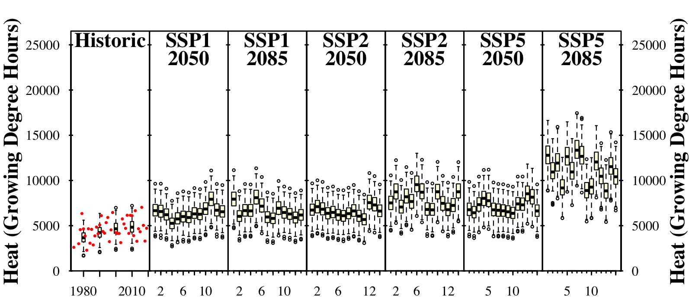
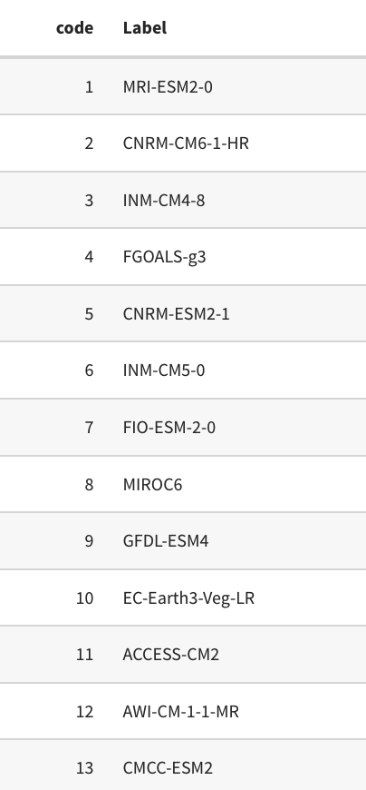

Chapter 16 Making CMPI6 scenario
16.1 Analyze the historic and future impact of climate change on two agroclimatic metrics of your choice, for the location you’ve chosen for your earlier analyses.
Creating change scenarios from our climate data
#library(chillR)
#library(kableExtra)
#library(tidyverse)
#library(ecmwfr)
#library(RMAWGEN)
GWANGJU_temps <- read_tab("KR_data/GWANGJU_temps.csv")
location=c(126.900,35.167)
area <- c(37, 126, 35, 127)
#user: user ID from Copernicus climate
#key: from the ID I will get
#ecmwfr: European Centre for Medium-Range Weather Forecasts
#we can only start from 2015, which it started before
#inthe cmip6_downloaded file there is blacklist.txt, which shows scenarios not is not working
download_cmip6_ecmwfr(
scenarios = 'ssp126',
area = area,
user = '269601',
key = '0b082782-deda-4eab-87e0-06d7f2c7fa4f',
model = 'default',
frequency = 'monthly',
variable = c('Tmin', 'Tmax'),
year_start = 2015,
year_end = 2100,
path_download = "cmip6_downloaded"
)
#ssp scenario 2.6, 4.5, 7.0, 8.5
download_cmip6_ecmwfr(
scenarios = c("historical", "ssp126", "ssp245", "ssp370", "ssp585"),
area = area,
user = '269601',
key = '0b082782-deda-4eab-87e0-06d7f2c7fa4f',
model = 'default',
frequency = 'monthly',
variable = c('Tmin', 'Tmax'),
year_start = 2015,
year_end = 2100,
path_download = "cmip6_downloaded"
)
#2015 all simulated data. it will give us the data is not changed and shows past data too.
download_baseline_cmip6_ecmwfr(
area = area,
user = '269601',
key = '0b082782-deda-4eab-87e0-06d7f2c7fa4f',
model = 'match_downloaded',
frequency = 'monthly',
variable = c('Tmin', 'Tmax'),
year_start = 1986,
year_end = 2014,
month = 1:12,
path_download = "cmip6_downloaded"
)
#1986is baseline GWANGJU_station <- data.frame(
station_name = c("GWANGJU"),
longitude = c(126.900),
latitude = c(35.167))
GWANGJU_extracted <- extract_cmip6_data(stations = GWANGJU_station,
variable = c("Tmin", "Tmax"),
download_path = "cmip6_downloaded/37_126_35_127",
keep_downloaded = TRUE)
head(GWANGJU_extracted$`ssp126_AWI-CM-1-1-MR`)
GWANGJU_change_scenarios <- gen_rel_change_scenario(GWANGJU_extracted) #if the temperature changed from the baseline
head(GWANGJU_change_scenarios)
write.csv(GWANGJU_change_scenarios, "KR_data/GWANGJU_all_change_scenarios.csv", row.names = FALSE)
#save this is important! that we don't have to runs all again.
GWANGJU_change_scenarios <- read.csv("KR_data/GWANGJU_all_change_scenarios.csv")
#2000 reference year.: 2050 compare to 2000
head(GWANGJU_change_scenarios)
GWANGJU_temps_1996 <- temperature_scenario_from_records(GWANGJU_temps,1996)
GWANGJU_temps_2000 <- temperature_scenario_from_records(GWANGJU_temps,2000)
GWANGJU_temps_1996
GWANGJU_temps_2000
base <- temperature_scenario_baseline_adjustment(GWANGJU_temps_1996,GWANGJU_temps_2000)
base
#scenario list
GWANGJU_scen_list <- convert_scen_information(GWANGJU_change_scenarios,
give_structure = FALSE)
scen_frame <- convert_scen_information(GWANGJU_scen_list)
GWANGJU_adjusted_list <- temperature_scenario_baseline_adjustment(base,GWANGJU_scen_list,
temperature_check_args=
list(scenario_check_thresholds = c(-5, 15)))
#more that 5 degree cooling or 15 degree warmer than it will find it temperature generation process: this takes very long time to run.
GWANGJU_temps<-read_tab("KR_data/GWANGJU_temps.csv")
temps_GWANGJU <- temperature_generation(GWANGJU_temps, years = c(1973, 2019),
sim_years = c(2001, 2100),
temperature_scenario = GWANGJU_adjusted_list,
temperature_check_args=list(
scenario_check_thresholds = c(-5, 15)))
# important the baseline download
save_temperature_scenarios(temps_GWANGJU,"KR_data/GWANGJU_future_climate",
"GWANGJU_futuretemps")#library(kableExtra)
#library(chillR)
#library(tidyverse)
#library(ggpmisc)
#library(patchwork)
temps_GWANGJU <- load_temperature_scenarios("KR_data/GWANGJU_future_climate",
"GWANGJU_futuretemps_")
# now we have temepratrue scenarios
frost_model <- function(x)
step_model(x,
data.frame(
lower=c(-1000,0),
upper=c(0,1000),
weight=c(1,0)))
models <- list(Chill_Portions = Dynamic_Model,
GDH = GDH,
Frost_H = frost_model)
chill_future_scenario_list_GWANGJU <- tempResponse_daily_list(
temps_GWANGJU,
latitude = 35.167,
Start_JDay = 305,
End_JDay = 59,
models = models)
chill_future_scenario_list_GWANGJU <- lapply(chill_future_scenario_list_GWANGJU,
function(x) x %>%
filter(Perc_complete == 100))
save_temperature_scenarios(chill_future_scenario_list_GWANGJU,
"KR_data/GWANGJU_future_climate",
"GWANGJU_futurechill_305_59")chill_future_scenario_list_GWANGJU <- load_temperature_scenarios("KR_data/GWANGJU_future_climate","GWANGJU_futurechill_305_59")
chill_hist_scenario_list_GWANGJU<-load_temperature_scenarios("KR_data","GWANGJU_hist_chill_305_59")
observed_chill_GWANGJU <- read_tab("KR_data/GWANGJU_observed_chill_305_59.csv")
# prepare for plotting
chills_GWANGJU <- make_climate_scenario(
chill_hist_scenario_list_GWANGJU,
caption = "Historic",
historic_data = observed_chill_GWANGJU,
time_series = TRUE)
plot_climate_scenarios(
climate_scenario_list = chills_GWANGJU,
metric = "Chill_Portions",
metric_label = "Chill (Chill Portions)")
SSPs <- c("ssp126", "ssp245", "ssp585")
Times <- c(2050, 2085)
list_ssp <-
strsplit(names(chill_future_scenario_list_GWANGJU), '\\.') %>%
map(2) %>%
unlist()
list_gcm <-
strsplit(names(chill_future_scenario_list_GWANGJU), '\\.') %>%
map(3) %>%
unlist()
list_time <-
strsplit(names(chill_future_scenario_list_GWANGJU), '\\.') %>%
map(4) %>%
unlist()
for(SSP in SSPs)
for(Time in Times)
{
# find all scenarios for the ssp and time
GWANGJU_chill <- chill_future_scenario_list_GWANGJU[list_ssp == SSP & list_time == Time]
names(GWANGJU_chill) <- list_gcm[list_ssp == SSP & list_time == Time]
if(SSP == "ssp126") SSPcaption <- "SSP1"
if(SSP == "ssp245") SSPcaption <- "SSP2"
if(SSP == "ssp585") SSPcaption <- "SSP5"
if(Time == "2050") Time_caption <- "2050"
if(Time == "2085") Time_caption <- "2085"
chills_GWANGJU <- GWANGJU_chill %>%
make_climate_scenario(
caption = c(SSPcaption,
Time_caption),
add_to = chills_GWANGJU)
}
info_chill <-
plot_climate_scenarios(
climate_scenario_list = chills_GWANGJU,
metric = "Chill_Portions",
metric_label = "Chill (Chill Portions)",
texcex = 1.5)
info_heat <-
plot_climate_scenarios(
climate_scenario_list = chills_GWANGJU,
metric = "GDH",
metric_label = "Heat (Growing Degree Hours)",
texcex = 1.5)
info_frost <-
plot_climate_scenarios(
climate_scenario_list = chills_GWANGJU,
metric="Frost_H",
metric_label="Frost incidence (hours)",
texcex=1.5)
## info_chill[[2]]
kable(info_chill[[2]]) %>%
kable_styling("striped", position = "left",font_size = 10)

Figure 16.1: Historic temperature scenarios

Figure 16.2: plot of chill accumulation

Figure 16.3: plot of heat accumulation

Figure 16.4: plot of frost hour accumulation

Figure 16.5: time series labels
- Chill Portions:Even with RCP8.5 projection shows there is no worries to grow trees up to 2085
- Heat (GDH): the projection with RCP8.5 in 2085 shows higher GDH
- Frost hours: frost hours decrease, which means less frost damage to flowers and good for farmer.